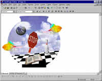
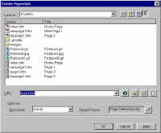

| ||||
Brought to you by Inside Microsoft FrontPage, a ZD Journals publication. Click here for a free issue  .
.
FrontPage lets you create four different kinds of hotspots: rectangular, circular, polygonal, and text. Because the technique for creating each one is slightly different, we'll look at them individually.
To demonstrate, we'll use the Fishbowl image that comes with Image Composer. If you'd like to follow along, open this file (it's located in the Image Composer\Tutorial folder). First, choose Select All from the Edit menu, then choose Save Selection As . . . from the File menu. Make sure CompuServe GIF is selected in the Save As Type dropdown list. Finally, change the file name to Fishbowl.gif and click on Save.
Now that you've saved your file, launch FrontPage Explorer and create a new Web. Double-click on index.htm to open it in FrontPage Editor, then choose Image . . . from the Insert menu. Next, click on the Windows Explorer icon (<ICON>) and navigate to the location where you saved Fishbowl.gif; now, open the file. When you do, your window should look like Figure C.

Click image to enlargeFigure C. We've added Fishbowl.gif to our test page
Let's begin adding our hotspots by turning the globe in the upper-left corner into a hotspot. First, click the image to select it.
Next, click the Circle icon (<ICON>) on the Image toolbar. (If you don't see this toolbar, select it from the View menu.) To draw the hotspot, click and drag from the center of the globe. Continue dragging until the hotspot is roughly the same size as the globe. Don't worry, however, if it's not perfectly aligned; you can reposition it later.
When you release your mouse button, the Create Hyperlink dialog box, shown in Figure D, will appear. Type world.htm in the target URL, then click OK. You've now created your first hotspot.

Click image to enlargeFigure D. Clicking on the globe will take the user to world.htm
If you'd like, you can move your hotspot by clicking on it and dragging it to a different part of the image. You can also resize it by dragging one of its corner handles.
Next, let's turn the bowling pin into a hotspot. Choose the Rectangle tool (<ICON>) and draw a rectangle around the bowling pin, starting in any corner. Again, specify the link URL and make any size and position changes you wish.
Our third hotspot will be a little more complex -- we'll turn the stop sign into a link. This time, choose the Polygon tool (<ICON>). Click on one corner of the stop sign, then click on each of the other corners in turn. Finally click on the first corner again. When you click back on that first corner, FrontPage displays the Create Hyperlink dialog box.
At last, let's create a text hotspot. Click the Text icon (<ICON>), and FrontPage will create a small text box in the center of the image. Type E-mail Us, then change the font attributes as you desire. (If you make the text larger, you'll probably need to resize the hotspot.)
To finish, drag the hotspot down into the white area at the lower left. Double-click its edge to access the Create Hyperlink dialog box. (Double-clicking the center of the hotspot lets you edit the text instead.)
Did you find this material useful? Gripes? Compliments? Suggestions for other articles? Write us!
© 1999 Microsoft Corporation. All rights reserved. Terms of use.